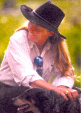

L istening to the loud, ever present voices of the "environmentalists" and the headline-grabbing militancy of Greenpeace, I am oftentimes bored silly. Is anyone even listening? I mean, it should be common sense, right? If we use all the natural resources, there won't be any left. And yet, environmental groups still yell and natural resources continue to get dug up, burned down and thrown away. It makes us wonder if there's a better way to save the planet.
As far as L. Hunter Lovins is concerned, there is. What if a logging company could make more money by not cutting down a tree? Along with co-authors Paul Hawken and Amory Lovins, Hunter Lovins has written her ninth book, Natural Capitalism (Little, Brown and Co., 1999) , a ground-breaking work explaining a new environmentalism and its place in "The New Industrial Revolution." As co-founder and CEO of the Rocky Mountain Institute in Colorado, Lovins has vast experience with the economics of energy-saving design. She has degrees in political studies, sociology and law, and, along with colleague Amory Lovins, she has been the recipient of numerous prizes, including this year's Time Magazine Hero for the Planet. In her spare time, Lovins serves on the local fire/rescue service as an EMT.
Sam Martin for MOTHER:You have said that capitalism is violating its own internal logic by destroying our natural resources. Can you elaborate on that statement?
L. Hunter Lovins: Sure. Capitalism rose out of an industrial revolution - the first one - in which there were relatively few people and lots of natural resources. Now we're in a situation in which we get about 10,000 more people on Earth every hour. What we're short of isn't people. We're short of natural resources such as timber, copper and oil, as well as the more important ecosystem services like a stable climate, viable estuaries and wetlands. This is the other half of natural capital. What capitalism is doing now is liquidating that form of capital because it isn't counting it in its economic equation. It appears nowhere on anybody's balance sheet. Therefore, the logic of economizing on your scarce resources remains the same, but the practice of capitalism is violating that logic by using resources very inefficiently.
MOTHER: But if you're implying that humans - instead of ecosystems - are the abundant resources that businesses should focus on, how are we going to pay for a rapidly growing workforce?
LHL: Primarily, at least initially, we - "we" being profit maximizing companies - will eliminate the unnecessary waste of resources. From '94 to '99, the Interface Carpet Company [in Atlanta] made an effort to use energy and materials more efficiently and added $124 million to their bottom line. They're shifting from a business model in which they use resources inefficiently (and use fewer people) to one in which they use more people to, for instance, pick up used carpet and recycle it. They would prefer not to sell you carpet which you then throw away in the landfill. Rather, they own it forever after. When it's worn, they come and get it, lay down new carpet, which they also own, take the worn carpet back, and remanufacture it into new carpet. This closing of the loop uses more people and is a higher value service to the customer. The company can charge more money for it if they wish to, or, because costs have been reduced, they can make a higher profit. They can also hire more people.
MOTHER: Can government playa role in these changes? LHL: Government has a very important role to play in several regards. First of all, capitalism - the market economy - does some things very well, but it was never intended to increase human well-being over many generations. That's the role of politics and civil society. So the first role that government has is that of deciding what kind of a future we want as a people, and putting in place the policies to achieve that future with a longer-range vision than the next quarter's profits or share prices.
MOTHER: And what kind of long-range vision are we looking at here?
LHL: That's up to the political process. We would suggest that a species desiring a long tenure on the earth think seriously about the basic principles of sustainability, and put in place policies to enable society to achieve that. Living beyond our means is the ideology of a debtor. It doesn't tend to lead to long-lived civilizations.
MOTHER: Do you think the China free trade deal is going be a good thing?
LHL: I do think it'll be a good thing. Now, I'm not an expert in this, but I've spent quite a bit of time in Washington, D.C. over the past week, meeting with people who do know a great deal about this issue. I've been listening to both sides - to the folks from the labor union, to the environmentalists, and such - and have concluded that one, the annual discussions of China and the annual renewal of normal trading relations has not achieved what we wanted it to. So preserving it doesn't gain us anything. Second, if you observe what happened in Russia - when they seized Gorbachev and attempted to re-establish the Soviet system by force - we knew that it was going to fail when we started getting e-mails out of Russia describing what was happening. We also knew that those e-mails were flying around Russia. That's why people gathered at the Russian White House, and that's why the people got into the streets: They could communicate. Therefore, if what you want is liberalism in China, the most potent tool is to spread computers everywhere. Enable them to get the technology of liberalization. And behaving towards China as if it were a naughty child is not a good psychological relationship if we want them to behave more like us. So, on balance it seems to me that the existing situation is not achieving its proponent's goals. Freeing up trade may not achieve those goals either, but it's not going to worsen the situation. It may well better it by getting the communications technology spread around.
MOTHER: You've been very involved in hybrid and alternative fuel automobiles at the Rocky Mountain Institute, especially with the hypercar [The Lovins' hypercar is a concept vehicle made out of ultralight carbon composites and powered by hydrogen fuel cells. See "Tabula Rasa," MOTHER, Oct./Nov. 1997.] What do you think about the new hybrid cars that have just hit the market?
LHL: I was talking in D.C. with a senior official from Toyota about the hybrids, and how he saw the role of the hybrids in relation to hypercars. He admitted to what we've said all along, which is that they're a great first step. They aren't the ultimate. Toyota doesn't see them as the ultimate. Now, the [Toyota] Prius is not yet on the market, but very near to it. The [Honda] Insight is on the market. I've driven one twice now, and it's a pretty cool car. However, it is not a hypercar. It's about two-thirds of the way to a hypercar. What it is not is light. It's still made out of steel. As a result, its hybrid engine is not as efficient as it would be if it were a full-on, ultralight hypercar made out of carbon or some other composite.
MOTHER: And hydrogen fuel cell technology is moving along rapidly. Isn't the problem, though, that hydrogen is too volatile to transport?
LHL: No, no, no. It's not that it's volatile. Hydrogen is no more volatile than gasoline, which is extremely dangerous. In fact, if someone were proposing now to introduce a gasoline economy everybody would be up in arms. Hydrogen has the bad history from the Hindenburg. But if you look at what actually happened, what burned there - what caused the disaster - was an aluminum-impregnated skin and diesel fuel. Everyone who rode the Hindenburg to the ground walked away from it. The people who died were the ones who jumped. Hydrogen burns up and away, whereas gasoline and other hydrocarbons burn down and with soot particles. It's the radiation from the soot that actually burns you. Theoretically, you can walk through a hydrogen fire.
Mother: That's interesting. I don't think I would want to try it, though.
LHL: Yeah, I'm not sure that I would either, but I'm assured by the experts that it's true. That said, what we do lack is a hydrogen infrastructure, which is why we suspect that hydrogen will be introduced first into buildings [see "Power to the People," MOTHER, Aug./Sept. 19991, where the byproduct of a fuel cell - hot water - has an economic value. It's almost certainly better to use hydrogen in a fuel cell in a car than to use a natural gas car. You get a much cleaner performance, and you get much better range, especially if you do it in a light hypercar.
MOTHER: To get back to Natural Capitalism, I'm fascinated by the principle you call biomimicry - the concept that we can use nature as a model for design.
LHL: Yes, this idea is that nature has solved de sign challenges in ways that we can copy to our economic advantage. Since nature has been solv ing design challenges for a very, very long time, you can be fairly certain that there aren't going to be unintended consequences of the design. They would have showed up already. The problem with human cleverness, such as in what's called biotechnology or genetic engineering, is that we're trying to speed up evolution to the pace of next quarter's profits. And there's a large potential of risk involved in doing that. [From Natural Capitalism. "Science writer Janine Benyus points out that spi ders make silk strong as kevlar but much tougher .... The abalone generates an inner shell twice as tough as our best ceramics, and diatoms make glass, both processes employing seawater with no furnaces. Trees turn sunlight, water and air into cellulose, a sugar stiffer and stronger than nylon.... We may never grow as skillful as spiders, abalone, diatoms or trees, but smart designers are apprenticing themselves to nature to learn the benign chemistry of its processes."]
MOTHER: You have made a bold statement that "waste is the cause of many of our social problems." Is the change in the way we do business going to change our social fabric?
LHL: It can certainly help. Clearly, a solution that is going to endure will have to come up with a way in which people not only have a place, a value and a use but also a way that lends a sense of being useful. And this is not the airy-fairy, New-Age, enhance-your-self-esteem viewpoint. There has to be a place in the economic equation where people can make a living for themselves and their families. Clearly, population control must be a part of a sustainable future. We cannot continue exponential population growth. One of the interesting points that was made at a conference I was at last week on globalism is that free trade is only free for financial and manufacturing capital. It's not at all free for human capital. There is not the free movement of bodies around the world. One economist pointed out that the reason that you don't see mass poverty in the Dakotas is that everybody has left. They went to where there were jobs and they were able to do that because there is the free movement of people within the 50 states. By contrast, there is not worldwide, and that's going to introduce intolerable strains. Now, I'm not calling for doing away with immigration controls by any stretch, but rather pointing out that there are a huge number of people in the world that aren't being considered in this economic equation. Natural capitalism is proposing that this situation has been caused by the same mental model that has led to the waste of resources. That is, businesses are seeking to increase labor productivity at all costs because it's believed that that is the basis of wealth creation. We're arguing that in the coming decades, the basis of wealth creation will be the efficient use of resources and the worthy use of people.
|
 |
|
|